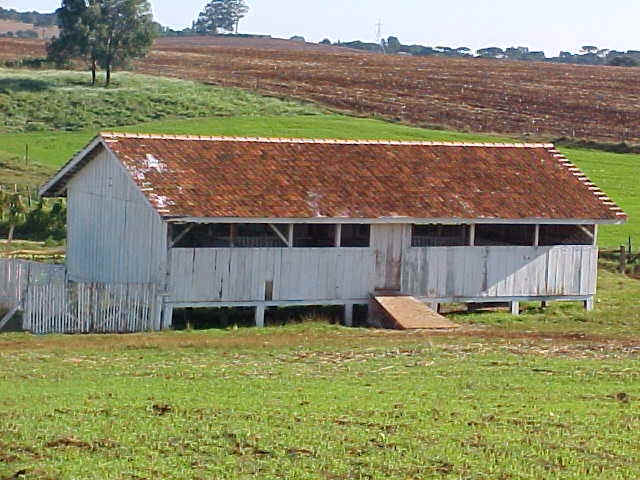
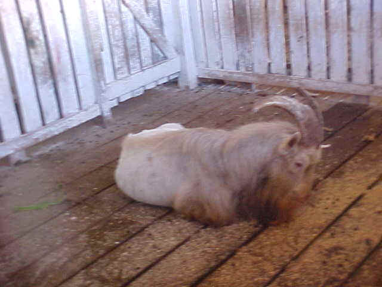
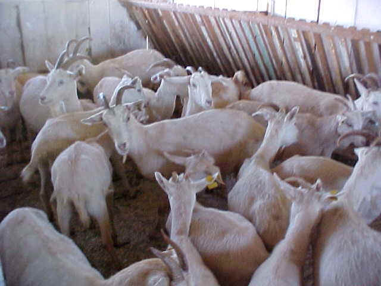
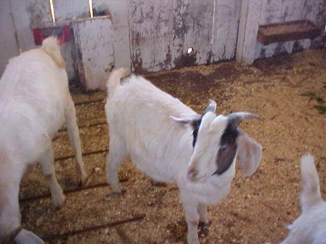

Caprinocultura

A criação de caprinos no Colégio teve seu início no ano de 2001, com alguns animais cedidos pela Fundação
Educacional de Guarapuava - FEG.
São criados animais das raças Saanen e Boer, com aptidão leiteira.
Por ser um setor novo existem poucos dados à respeito do mesmo.
Suas instalações, localizadas próximas ao setor de ovinos, foram construídas com o material proveniente da demolição da antiga marcenaria.
O capril é dividido em seis baias e uma sala para depósito.
O objetivo da criação é para aprendizado, consumo do Colégio e venda de machos e fêmeas para reprodução.
 |
Número de animais
Fêmeas jovens – 10
Matrizes – 17
Reprodutores – 3
Machos engorda – 11
|
|
Alimentação:
Pastagem (pastejo e pasto no fenil) a vontade;
complementação com rolão de milho e silagem 2 vezes ao dia |

Aprisco construído em 2002

Reprodutor

Matrizes

Animais para participar de exposição